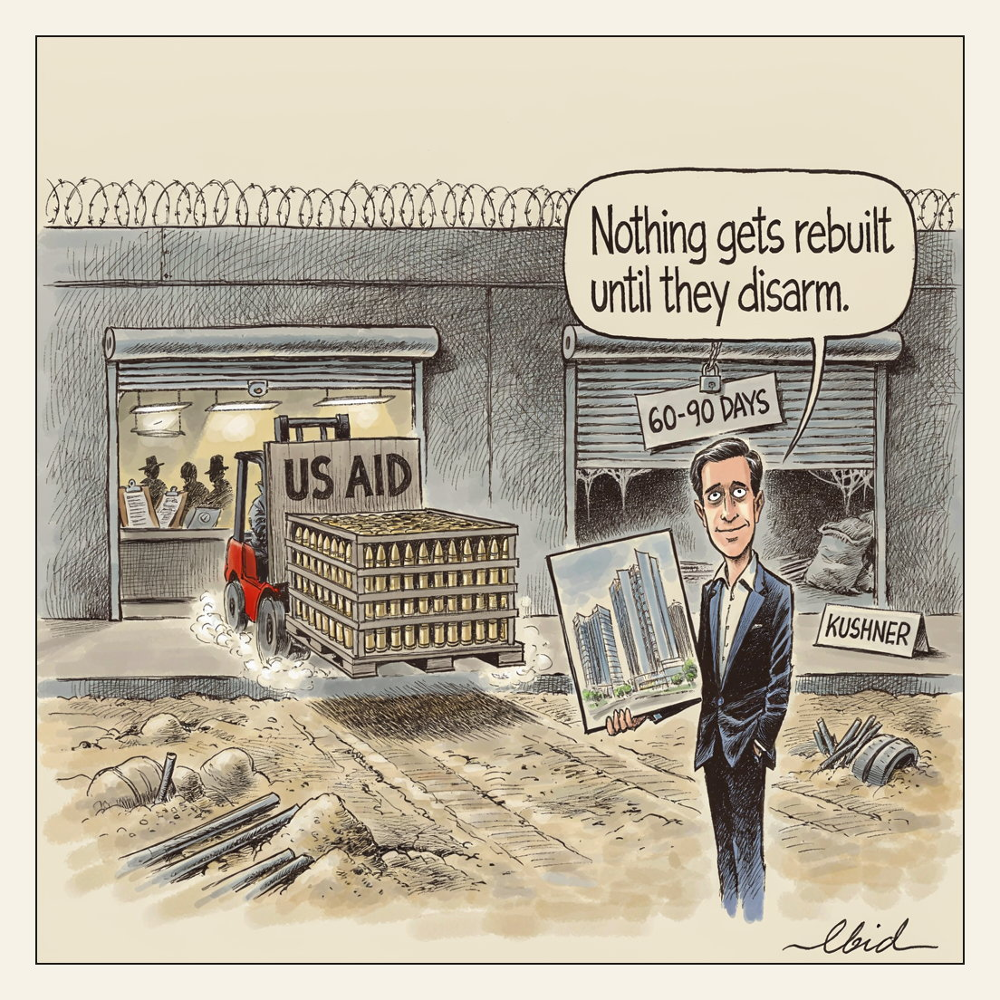

Ammunition never required a permit.
Two Windows

US envoy Jared Kushner said on Fox News that the Trump administration will not allow Gaza to be rebuilt until Hamas disarms, setting a 60-to-90-day window for handing over weapons and tunnels and warning Israel would otherwise have more US support to 'finish the job'. Hamas had agreed to disarm under the US-backed roadmap; Israel rejected the proposal earlier this month. At least 1,265 Palestinians have been killed in Gaza since the ceasefire took effect.